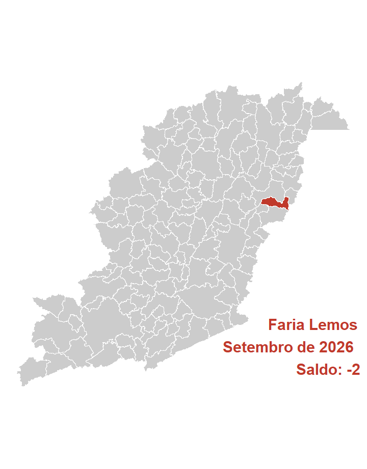
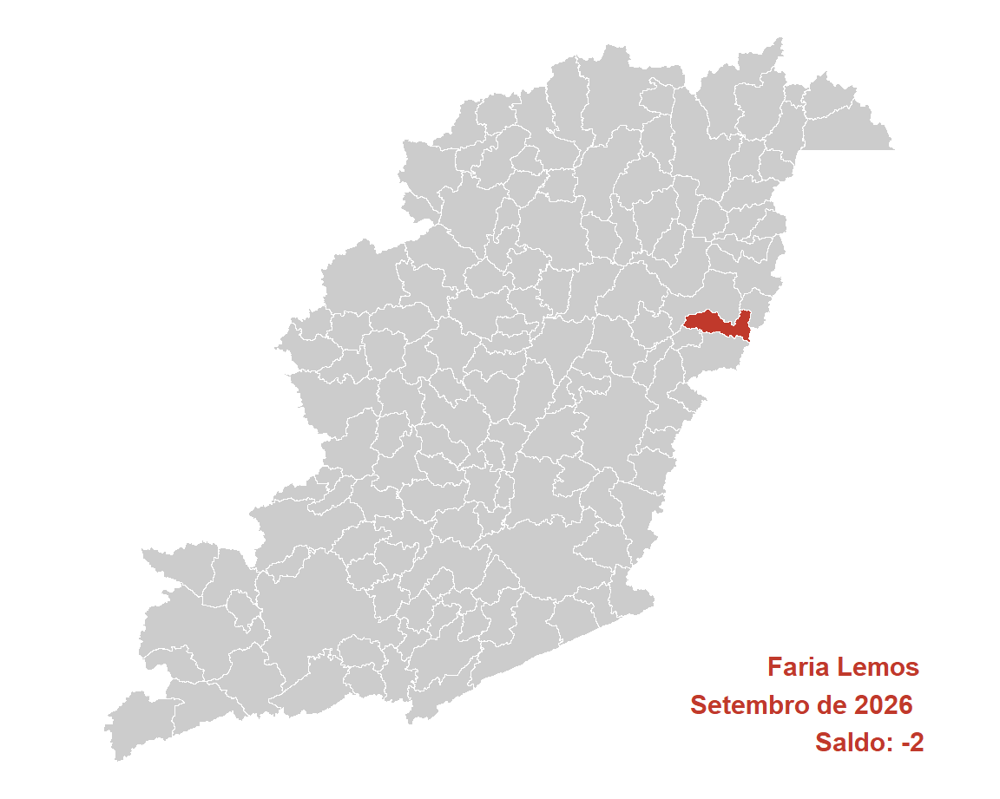

| Ano | Brasil | Estado | Mesorregião | Microrregião | Município |
|---|---|---|---|---|---|
| 2026 | 121.305 | 8.102 | 1.483 | 204 | -2 |
| 2025 | 214.609 | 11.828 | 1.004 | 411 | 3 |
| 2024 | 252.277 | 16.171 | 2.023 | 476 | 0 |
| 2023 | 204.771 | 11.849 | 511 | 143 | -4 |
| 2022 | 278.567 | 21.956 | 1.316 | 234 | 3 |
| 2021 | 330.133 | 26.058 | 1.725 | 299 | 0 |
| 2020 | 299.724 | 31.194 | 2.230 | 275 | 1 |
| 2019 | 157.213 | 3.841 | 243 | 122 | 6 |
| 2018 | 137.336 | 5.200 | 6 | 97 | 3 |
| 2017 | 34.392 | -4.291 | 141 | 103 | 2 |
| 2016 | -39.282 | -16.238 | -1.582 | 12 | 1 |
| 2015 | -95.602 | -32.423 | -1.893 | 38 | 6 |
| 2014 | 123.785 | -840 | -216 | 178 | 13 |
| 2013 | 211.068 | 6.925 | 828 | 121 | 2 |
| 2012 | 150.334 | -1.180 | -479 | 216 | -3 |
| 2011 | 209.078 | 3.354 | 811 | 39 | -14 |
| 2010 | 246.875 | 8.448 | 2.124 | 147 | 2 |
| 2009 | 252.617 | 7.451 | 2.519 | 221 | 6 |
| 2008 | 282.841 | 12.040 | -44 | 169 | -9 |
| 2007 | 251.168 | 2.258 | -438 | -10 | -10 |
| Ano | Mes | Brasil | Estado | Mesorregião | Microrregião | Município |
|---|---|---|---|---|---|---|
| 2026 | Setembro | 121.305 | 8.102 | 1.483 | 204 | -2 |
| 2026 | Agosto | 161.062 | 8.899 | 1.785 | 220 | -4 |
| 2026 | Julho | 56.007 | 4.383 | 595 | 110 | -4 |
| 2026 | Junho | 136.423 | 20.734 | 1.120 | 44 | 0 |
| 2026 | Maio | 81.475 | 9.772 | 129 | 0 | -1 |
| 2026 | Abril | 79.266 | 8.473 | 609 | 46 | -19 |
| 2026 | Março | 227.736 | 37.773 | 1.747 | 168 | 1 |
| 2026 | Fevereiro | 267.915 | 24.138 | 114 | -47 | 0 |
| 2026 | Janeiro | 117.725 | 7.503 | 66 | 101 | -1 |
| 2025 | Dezembro | -635.579 | -74.187 | -6.017 | -474 | -1 |
| 2025 | Novembro | 81.164 | -9.104 | 863 | 165 | -8 |
| 2025 | Outubro | 92.574 | -4.284 | 829 | 201 | 7 |
| Acum. 2026 | 1.248.914 | 129.777 | 7.648 | 846 | -30 | |
| Acumulado 12m | 787.073 | 42.202 | 3.323 | 738 | -32 |
| CBO | Brasil | Estado | Mesorregião | Microrregião | Município |
|---|---|---|---|---|---|
| Forças armadas | 7 | 1 | 1 | NA | NA |
| Poder público | -10.739 | -1.172 | -20 | 1 | NA |
| Ciências e artes | 4.334 | 330 | 144 | 18 | NA |
| Técnicos de nível médio | 11.614 | 1.539 | 168 | 33 | NA |
| Serviços administrativo | 26.878 | 5.689 | 355 | 30 | NA |
| Serviços e comércio | 50.360 | 6.230 | 609 | 130 | -2 |
| Agropecuária | 7.561 | -7.620 | -125 | -4 | 0 |
| Bens e serviços industriais 1 | 36.684 | 3.617 | 226 | -19 | NA |
| Bens e serviços industriais 2 | -6.343 | -111 | 19 | 8 | NA |
| Reparação e manutenção | 949 | -401 | 106 | 7 | NA |
| CNAE | Brasil | Estado | Mesorregião | Microrregião | Município |
|---|---|---|---|---|---|
| Agropecuária/florestal | -4.381 | -8.221 | -147 | -7 | 0 |
| Extrativismo | -20 | -481 | 37 | 6 | NA |
| Indústria de transformação | 15.744 | 579 | -30 | -42 | NA |
| Eletricidade e gás | 1.177 | 41 | 7 | NA | NA |
| Água e esgoto | 2.384 | 448 | -21 | -3 | NA |
| Construção | 9.468 | 1.680 | 67 | -23 | NA |
| Comércio de automotores | 15.697 | 3.212 | 565 | 126 | -1 |
| Transporte e correios | 13.240 | 1.181 | 91 | 10 | NA |
| Alojamento e alimentação | 10.581 | 1.256 | 131 | 35 | NA |
| Comunicação | 4.628 | 1.854 | 15 | 5 | NA |
| Atividades financeiras | -596 | 146 | 11 | -3 | NA |
| Imobiliárias | 521 | 28 | -6 | -5 | NA |
| Atividades científicas e técnicas | 6.540 | 294 | 54 | 20 | NA |
| Atividades administrativas | 18.386 | 1.591 | 260 | 2 | NA |
| Administração pública | 1.090 | 11 | 12 | -2 | NA |
| Educação | 9.538 | 2.135 | 103 | 13 | NA |
| Saúde e serviços sociais | 15.403 | 1.775 | 265 | 25 | NA |
| Artes, cultura e esportes | 1.570 | 228 | 41 | 19 | NA |
| Serviços | 327 | 344 | 31 | 28 | -1 |
| Domésticos | 14 | 5 | NA | NA | NA |
| Organismos internacionais | -1 | NA | NA | NA | NA |
| Não classificado | -5 | -4 | -3 | NA | NA |
| Educ | Brasil | Estado | Mesorregião | Microrregião | Município |
|---|---|---|---|---|---|
| Analfabeto | 1.835 | 0 | -11 | -4 | -1 |
| Até o 5º ano incompleto | 4.523 | -804 | -1 | 2 | NA |
| 5º ano completo | -195 | -859 | -66 | -8 | -1 |
| 6º ano completo até o 9º ano incompleto | 879 | -526 | 63 | 17 | NA |
| Fundamental completo | -1.364 | -1.224 | -57 | -1 | NA |
| Médio incompleto | 17.258 | 2.822 | 239 | 69 | -2 |
| Médio completo | 82.812 | 6.288 | 1.049 | 104 | 1 |
| Superior incompleto | 5.227 | 986 | 61 | 12 | 1 |
| Superior completo | 10.330 | 1.419 | 206 | 13 | NA |
| Idade | Brasil | Estado | Mesorregião | Microrregião | Município |
|---|---|---|---|---|---|
| 10 a 14 anos | 2.483 | 529 | 43 | 2 | NA |
| 15 a 17 anos | 23.954 | 4.936 | 418 | 89 | NA |
| 18 a 24 anos | 79.856 | 6.043 | 736 | 91 | 0 |
| 25 a 29 anos | 7.177 | -667 | 6 | 17 | 1 |
| 30 a 39 anos | 7.537 | -379 | 192 | 10 | -1 |
| 40 a 49 anos | 10.561 | 232 | 212 | 25 | NA |
| 50 a 64 anos | -6.095 | -1.915 | -73 | -26 | -2 |
| 65 anos ou mais | -5.962 | -781 | -59 | -7 | NA |
| NA | 1.794 | 104 | 8 | 3 | NA |
| Raça | Brasil | Estado | Mesorregião | Microrregião | Município |
|---|---|---|---|---|---|
| Indígena | 15.493 | 3.090 | 365 | 110 | -1 |
| Branca | 17.416 | 1.288 | 212 | 5 | -1 |
| 3 | 96.805 | 4.887 | 1.023 | 108 | 0 |
| Preta | 229 | -39 | -27 | -6 | NA |
| 5 | 80 | -76 | -4 | -1 | NA |
| Amarela | -8.304 | -988 | -80 | -12 | NA |
| 9 | -414 | -60 | -6 | NA | NA |
| Gênero | Brasil | Estado | Mesorregião | Microrregião | Município |
|---|---|---|---|---|---|
| Homens | 59.129 | 1.650 | 670 | 47 | -2 |
| Mulheres | 62.176 | 6.452 | 813 | 157 | NA |
| Grande_setor | Brasil | Estado | Mesorregião | Microrregião | Município |
|---|---|---|---|---|---|
| Indústria | 19.285 | 587 | -7 | -39 | NA |
| Construção civil | 9.468 | 1.680 | 67 | -23 | NA |
| Comércio | 15.697 | 3.212 | 565 | 126 | -1 |
| Serviços | 81.241 | 10.848 | 1.008 | 147 | -1 |
| Agropecuária, extrativismo vegetal,caça e pesca | -4.381 | -8.221 | -147 | -7 | 0 |
| Não classificado | -5 | -4 | -3 | NA | NA |
| Setores | Brasil | Estado | Mesorregião | Microrregião | Município |
|---|---|---|---|---|---|
| Extrativismo mineral | -20 | -481 | 37 | 6 | NA |
| Indústria de transformação | 15.744 | 579 | -30 | -42 | NA |
| Serviços industriais de utilidade pública | 3.561 | 489 | -14 | -3 | NA |
| Construção civil | 9.468 | 1.680 | 67 | -23 | NA |
| Comércio | 15.697 | 3.212 | 565 | 126 | -1 |
| Serviços | 80.152 | 10.837 | 996 | 149 | -1 |
| Adiminstração pública | 1.084 | 7 | 9 | -2 | NA |
| Agropecuária, extrativismo vegetal, caça e pesca | -4.381 | -8.221 | -147 | -7 | 0 |
| Ano | Brasil | Estado | Mesorregião | Microrregião | Município |
|---|---|---|---|---|---|
| 2002 | 28.683.913 | 3.046.362 | 285.345 | 28.070 | 501 |
| 2003 | 29.544.927 | 3.138.026 | 288.853 | 28.772 | 492 |
| 2004 | 31.407.576 | 3.332.775 | 298.898 | 29.750 | 474 |
| 2005 | 33.238.617 | 3.592.560 | 322.026 | 32.542 | 527 |
| 2006 | 32.903.959 | 3.744.043 | 337.470 | 34.652 | 508 |
| 2007 | 37.607.430 | 4.036.203 | 354.945 | 38.192 | 559 |
| 2008 | 39.441.566 | 4.184.183 | 369.202 | 39.341 | 542 |
| 2009 | 41.207.546 | 4.350.839 | 388.196 | 42.032 | 437 |
| 2010 | 44.068.355 | 4.646.891 | 408.037 | 44.049 | 484 |
| 2011 | 46.310.631 | 4.850.976 | 429.166 | 44.501 | 491 |
| 2012 | 47.458.712 | 4.928.225 | 439.074 | 44.999 | 323 |
| 2013 | 48.948.433 | 5.057.080 | 454.446 | 47.030 | 536 |
| 2014 | 49.571.510 | 5.071.906 | 456.058 | 47.869 | 603 |
| 2015 | 48.060.807 | 4.821.116 | 445.516 | 47.377 | 612 |
| 2016 | 46.060.198 | 4.628.701 | 426.384 | 44.154 | 487 |
| 2017 | 46.281.590 | 4.710.919 | 435.944 | 46.105 | 581 |
| 2018 | 46.631.115 | 4.760.830 | 436.333 | 45.291 | 473 |
| 2019 | 46.748.356 | 4.856.025 | 435.241 | 45.739 | 530 |
| 2020 | 46.236.176 | 4.814.874 | 423.457 | 43.001 | 423 |
| 2021 | 48.728.871 | 5.148.435 | 448.511 | 47.827 | 477 |
| 2022 | 52.788.939 | 5.523.279 | 476.377 | 51.121 | 493 |
| 2023 | 54.705.614 | 5.633.160 | 497.668 | 52.654 | 486 |
| 2024 | 57.789.526 | 6.094.585 | 511.827 | 53.119 | 380 |
| 2025 | 60.688.704 | 6.325.291 | 538.504 | 57.113 | 480 |
| NA | 0 | 0 | 0 | 0 | NA |
| Ano | Brasil | Estado | Mesorregião | Microrregião |
|---|---|---|---|---|
| 2002 | 0,0017 | 0,0164 | 0,1756 | 1,7848 |
| 2003 | 0,0017 | 0,0157 | 0,1703 | 1,7100 |
| 2004 | 0,0015 | 0,0142 | 0,1586 | 1,5933 |
| 2005 | 0,0016 | 0,0147 | 0,1637 | 1,6194 |
| 2006 | 0,0015 | 0,0136 | 0,1505 | 1,4660 |
| 2007 | 0,0015 | 0,0138 | 0,1575 | 1,4637 |
| 2008 | 0,0014 | 0,0130 | 0,1468 | 1,3777 |
| 2009 | 0,0011 | 0,0100 | 0,1126 | 1,0397 |
| 2010 | 0,0011 | 0,0104 | 0,1186 | 1,0988 |
| 2011 | 0,0011 | 0,0101 | 0,1144 | 1,1033 |
| 2012 | 0,0007 | 0,0066 | 0,0736 | 0,7178 |
| 2013 | 0,0011 | 0,0106 | 0,1179 | 1,1397 |
| 2014 | 0,0012 | 0,0119 | 0,1322 | 1,2597 |
| 2015 | 0,0013 | 0,0127 | 0,1374 | 1,2918 |
| 2016 | 0,0011 | 0,0105 | 0,1142 | 1,1030 |
| 2017 | 0,0013 | 0,0123 | 0,1333 | 1,2602 |
| 2018 | 0,0010 | 0,0099 | 0,1084 | 1,0444 |
| 2019 | 0,0011 | 0,0109 | 0,1218 | 1,1587 |
| 2020 | 0,0009 | 0,0088 | 0,0999 | 0,9837 |
| 2021 | 0,0010 | 0,0093 | 0,1064 | 0,9973 |
| 2022 | 0,0009 | 0,0089 | 0,1035 | 0,9644 |
| 2023 | 0,0009 | 0,0086 | 0,0977 | 0,9230 |
| 2024 | 0,0007 | 0,0062 | 0,0742 | 0,7154 |
| 2025 | 0,0008 | 0,0076 | 0,0891 | 0,8404 |
| NA | NA | NA | NA | NA |
| Ano | Brasil | Estado | Mesorregião | Microrregião | Município |
|---|---|---|---|---|---|
| 2002 | NA | NA | NA | NA | NA |
| 2003 | 3,00 | 3,01 | 1,23 | 2,50 | -1,80 |
| 2004 | 6,30 | 6,21 | 3,48 | 3,40 | -3,66 |
| 2005 | 5,83 | 7,79 | 7,74 | 9,38 | 11,18 |
| 2006 | -1,01 | 4,22 | 4,80 | 6,48 | -3,61 |
| 2007 | 14,29 | 7,80 | 5,18 | 10,22 | 10,04 |
| 2008 | 4,88 | 3,67 | 4,02 | 3,01 | -3,04 |
| 2009 | 4,48 | 3,98 | 5,14 | 6,84 | -19,37 |
| 2010 | 6,94 | 6,80 | 5,11 | 4,80 | 10,76 |
| 2011 | 5,09 | 4,39 | 5,18 | 1,03 | 1,45 |
| 2012 | 2,48 | 1,59 | 2,31 | 1,12 | -34,22 |
| 2013 | 3,14 | 2,61 | 3,50 | 4,51 | 65,94 |
| 2014 | 1,27 | 0,29 | 0,35 | 1,78 | 12,50 |
| 2015 | -3,05 | -4,94 | -2,31 | -1,03 | 1,49 |
| 2016 | -4,16 | -3,99 | -4,29 | -6,80 | -20,42 |
| 2017 | 0,48 | 1,78 | 2,24 | 4,42 | 19,30 |
| 2018 | 0,76 | 1,06 | 0,09 | -1,77 | -18,59 |
| 2019 | 0,25 | 2,00 | -0,25 | 0,99 | 12,05 |
| 2020 | -1,10 | -0,85 | -2,71 | -5,99 | -20,19 |
| 2021 | 5,39 | 6,93 | 5,92 | 11,22 | 12,77 |
| 2022 | 8,33 | 7,28 | 6,21 | 6,89 | 3,35 |
| 2023 | 3,63 | 1,99 | 4,47 | 3,00 | -1,42 |
| 2024 | 5,64 | 8,19 | 2,85 | 0,88 | -21,81 |
| 2025 | 5,02 | 3,79 | 5,21 | 7,52 | 26,32 |
| NA | -100,00 | -100,00 | -100,00 | -100,00 | NA |
| Ano | Brasil | Estado | Mesorregião | Microrregião | Município |
|---|---|---|---|---|---|
| 2002 | 0,00 | 0,00 | 0,00 | 0,00 | 0,00 |
| 2003 | 3,00 | 3,01 | 1,23 | 2,50 | -1,80 |
| 2004 | 9,50 | 9,40 | 4,75 | 5,99 | -5,39 |
| 2005 | 15,88 | 17,93 | 12,85 | 15,93 | 5,19 |
| 2006 | 14,71 | 22,90 | 18,27 | 23,45 | 1,40 |
| 2007 | 31,11 | 32,49 | 24,39 | 36,06 | 11,58 |
| 2008 | 37,50 | 37,35 | 29,39 | 40,15 | 8,18 |
| 2009 | 43,66 | 42,82 | 36,04 | 49,74 | -12,77 |
| 2010 | 53,63 | 52,54 | 43,00 | 56,93 | -3,39 |
| 2011 | 61,45 | 59,24 | 50,40 | 58,54 | -2,00 |
| 2012 | 65,45 | 61,77 | 53,87 | 60,31 | -35,53 |
| 2013 | 70,65 | 66,00 | 59,26 | 67,55 | 6,99 |
| 2014 | 72,82 | 66,49 | 59,83 | 70,53 | 20,36 |
| 2015 | 67,55 | 58,26 | 56,13 | 68,78 | 22,16 |
| 2016 | 60,58 | 51,94 | 49,43 | 57,30 | -2,79 |
| 2017 | 61,35 | 54,64 | 52,78 | 64,25 | 15,97 |
| 2018 | 62,57 | 56,28 | 52,91 | 61,35 | -5,59 |
| 2019 | 62,98 | 59,40 | 52,53 | 62,95 | 5,79 |
| 2020 | 61,19 | 58,05 | 48,40 | 53,19 | -15,57 |
| 2021 | 69,88 | 69,00 | 57,18 | 70,38 | -4,79 |
| 2022 | 84,04 | 81,31 | 66,95 | 82,12 | -1,60 |
| 2023 | 90,72 | 84,91 | 74,41 | 87,58 | -2,99 |
| 2024 | 101,47 | 100,06 | 79,37 | 89,24 | -24,15 |
| 2025 | 111,58 | 107,63 | 88,72 | 103,47 | -4,19 |
| NA | -100,00 | -100,00 | -100,00 | -100,00 | NA |
| Ano | Brasil | Estado | Mesorregião | Microrregião | Município |
|---|---|---|---|---|---|
| 2002 | 885,39 | 699,14 | 526,14 | 409,20 | 406,06 |
| 2003 | 985,30 | 783,42 | 585,15 | 471,25 | 457,12 |
| 2004 | 1.058,63 | 846,89 | 634,30 | 487,08 | 411,17 |
| 2005 | 1.135,85 | 904,05 | 685,47 | 562,30 | 426,52 |
| 2006 | 1.245,61 | 1.006,04 | 744,63 | 628,09 | 481,60 |
| 2007 | 1.301,87 | 1.065,81 | 802,71 | 675,12 | 522,25 |
| 2008 | 1.436,70 | 1.181,73 | 876,96 | 719,01 | 602,21 |
| 2009 | 1.535,74 | 1.273,12 | 963,89 | 788,85 | 677,41 |
| 2010 | 1.675,01 | 1.414,21 | 1.069,58 | 876,88 | 766,26 |
| 2011 | 1.827,45 | 1.560,35 | 1.172,93 | 951,27 | 869,90 |
| 2012 | 1.996,90 | 1.692,70 | 1.292,52 | 1.051,38 | 900,32 |
| 2013 | 2.177,60 | 1.861,57 | 1.399,74 | 1.177,13 | 1.109,39 |
| 2014 | 2.352,42 | 2.010,33 | 1.536,23 | 1.282,80 | 1.246,68 |
| 2015 | 2.541,18 | 2.165,84 | 1.645,82 | 1.399,34 | 1.296,62 |
| 2016 | 2.731,61 | 2.342,07 | 1.809,10 | 1.516,69 | 1.453,78 |
| 2017 | 2.850,41 | 2.440,03 | 1.918,43 | 1.593,62 | 1.481,97 |
| 2018 | 2.939,05 | 2.489,11 | 1.983,97 | 1.652,21 | 1.578,12 |
| 2019 | 2.921,13 | 2.495,23 | 1.953,96 | 1.680,60 | 1.594,77 |
| 2020 | 3.003,69 | 2.598,34 | 2.015,89 | 1.689,83 | 1.717,68 |
| 2021 | 3.295,76 | 2.889,99 | 2.268,66 | 1.908,71 | 1.928,62 |
| 2022 | 3.437,29 | 2.916,94 | 2.333,04 | 2.033,17 | 2.131,53 |
| 2023 | 3.383,32 | 3.022,90 | 2.472,81 | 2.309,96 | 2.155,91 |
| 2024 | 3.728,47 | 3.255,82 | 2.658,71 | 2.356,14 | 2.245,48 |
| 2025 | 3.760,69 | 3.221,18 | 2.794,52 | 2.497,20 | 2.618,61 |
| NA | NA | NA | NA | NA | NA |
| Ano | Estado | Mesorregião | Microrregião | Município |
|---|---|---|---|---|
| 2002 | 78,9650 | 59,4250 | 46,2168 | 45,8629 |
| 2003 | 79,5106 | 59,3880 | 47,8285 | 46,3935 |
| 2004 | 79,9994 | 59,9173 | 46,0103 | 38,8402 |
| 2005 | 79,5923 | 60,3491 | 49,5046 | 37,5508 |
| 2006 | 80,7669 | 59,7806 | 50,4244 | 38,6636 |
| 2007 | 81,8673 | 61,6586 | 51,8577 | 40,1155 |
| 2008 | 82,2528 | 61,0401 | 50,0460 | 41,9160 |
| 2009 | 82,8995 | 62,7641 | 51,3664 | 44,1098 |
| 2010 | 84,4297 | 63,8548 | 52,3508 | 45,7464 |
| 2011 | 85,3838 | 64,1840 | 52,0543 | 47,6020 |
| 2012 | 84,7663 | 64,7266 | 52,6508 | 45,0859 |
| 2013 | 85,4872 | 64,2790 | 54,0564 | 50,9452 |
| 2014 | 85,4578 | 65,3041 | 54,5312 | 52,9955 |
| 2015 | 85,2299 | 64,7662 | 55,0667 | 51,0245 |
| 2016 | 85,7394 | 66,2282 | 55,5236 | 53,2205 |
| 2017 | 85,6027 | 67,3036 | 55,9086 | 51,9913 |
| 2018 | 84,6910 | 67,5037 | 56,2159 | 53,6947 |
| 2019 | 85,4200 | 66,8905 | 57,5326 | 54,5944 |
| 2020 | 86,5048 | 67,1137 | 56,2584 | 57,1857 |
| 2021 | 87,6881 | 68,8357 | 57,9143 | 58,5184 |
| 2022 | 84,8615 | 67,8744 | 59,1505 | 62,0121 |
| 2023 | 89,3471 | 73,0881 | 68,2749 | 63,7218 |
| 2024 | 87,3232 | 71,3083 | 63,1932 | 60,2251 |
| 2025 | 85,6538 | 74,3088 | 66,4028 | 69,6311 |
| NA | NA | NA | NA | NA |
| Grandes.Grupos.CBO | Brasil | Estado | Mesorregião | Microrregião | Município |
|---|---|---|---|---|---|
| Membros das Forças Armadas | 0 | 0 | 0 | 0 | 0 |
| (NaN) | (NaN) | (NaN) | (NaN) | (NaN) | |
| Membros superiores do poder público, dirigentes e gerentes | 0 | 0 | 0 | 0 | 0 |
| (NaN) | (NaN) | (NaN) | (NaN) | (NaN) | |
| Profissionais das ciências e das artes | 0 | 0 | 0 | 0 | 0 |
| (NaN) | (NaN) | (NaN) | (NaN) | (NaN) | |
| Técnicos de nível médio | 0 | 0 | 0 | 0 | 0 |
| (NaN) | (NaN) | (NaN) | (NaN) | (NaN) | |
| Trabalhadores de serviços administrativos | 0 | 0 | 0 | 0 | 0 |
| (NaN) | (NaN) | (NaN) | (NaN) | (NaN) | |
| Trabalhadores dos serviços, vendedores do comércio | 0 | 0 | 0 | 0 | 0 |
| (NaN) | (NaN) | (NaN) | (NaN) | (NaN) | |
| Trabalhadores agropecuários, florestais e da pesca | 0 | 0 | 0 | 0 | 0 |
| (NaN) | (NaN) | (NaN) | (NaN) | (NaN) | |
| Trabalhadores da produção de bens e serviços industriais (1) | 0 | 0 | 0 | 0 | 0 |
| (NaN) | (NaN) | (NaN) | (NaN) | (NaN) | |
| Trabalhadores da produção de bens e serviços industriais (2) | 0 | 0 | 0 | 0 | 0 |
| (NaN) | (NaN) | (NaN) | (NaN) | (NaN) | |
| Trabalhadores em serviços de reparação e manutenção | 0 | 0 | 0 | 0 | 0 |
| (NaN) | (NaN) | (NaN) | (NaN) | (NaN) | |
| Não classificados | 0 | 0 | 0 | 0 | 0 |
| (NaN) | (NaN) | (NaN) | (NaN) | (NaN) |
| CNAE | Brasil | Estado | Mesorregião | Microrregião | Município |
|---|---|---|---|---|---|
| Agropecuária/florestal | 0 | 0 | 0 | 0 | 0 |
| (NaN) | (NaN) | (NaN) | (NaN) | (NaN) | |
| Extrativismo | 0 | 0 | 0 | 0 | 0 |
| (NaN) | (NaN) | (NaN) | (NaN) | (NaN) | |
| Indústria de transformação | 0 | 0 | 0 | 0 | 0 |
| (NaN) | (NaN) | (NaN) | (NaN) | (NaN) | |
| Eletricidade e gás | 0 | 0 | 0 | 0 | 0 |
| (NaN) | (NaN) | (NaN) | (NaN) | (NaN) | |
| Água e esgoto | 0 | 0 | 0 | 0 | 0 |
| (NaN) | (NaN) | (NaN) | (NaN) | (NaN) | |
| Construção | 0 | 0 | 0 | 0 | 0 |
| (NaN) | (NaN) | (NaN) | (NaN) | (NaN) | |
| Comércio de automotores | 0 | 0 | 0 | 0 | 0 |
| (NaN) | (NaN) | (NaN) | (NaN) | (NaN) | |
| Transporte e correios | 0 | 0 | 0 | 0 | 0 |
| (NaN) | (NaN) | (NaN) | (NaN) | (NaN) | |
| Alojamento e alimentação | 0 | 0 | 0 | 0 | 0 |
| (NaN) | (NaN) | (NaN) | (NaN) | (NaN) | |
| Comunicação | 0 | 0 | 0 | 0 | 0 |
| (NaN) | (NaN) | (NaN) | (NaN) | (NaN) | |
| Atividades financeiras | 0 | 0 | 0 | 0 | 0 |
| (NaN) | (NaN) | (NaN) | (NaN) | (NaN) | |
| Imobiliárias | 0 | 0 | 0 | 0 | 0 |
| (NaN) | (NaN) | (NaN) | (NaN) | (NaN) | |
| Atividades científicas e técnicas | 0 | 0 | 0 | 0 | 0 |
| (NaN) | (NaN) | (NaN) | (NaN) | (NaN) | |
| Atividades administrativas | 0 | 0 | 0 | 0 | 0 |
| (NaN) | (NaN) | (NaN) | (NaN) | (NaN) | |
| Administração pública | 0 | 0 | 0 | 0 | 0 |
| (NaN) | (NaN) | (NaN) | (NaN) | (NaN) | |
| Educação | 0 | 0 | 0 | 0 | 0 |
| (NaN) | (NaN) | (NaN) | (NaN) | (NaN) | |
| Saúde e serviços sociais | 0 | 0 | 0 | 0 | 0 |
| (NaN) | (NaN) | (NaN) | (NaN) | (NaN) | |
| Artes, cultura e esportes | 0 | 0 | 0 | 0 | 0 |
| (NaN) | (NaN) | (NaN) | (NaN) | (NaN) | |
| Serviços | 0 | 0 | 0 | 0 | 0 |
| (NaN) | (NaN) | (NaN) | (NaN) | (NaN) | |
| Domésticos | 0 | 0 | 0 | 0 | 0 |
| (NaN) | (NaN) | (NaN) | (NaN) | (NaN) | |
| Organismos internacionais | 0 | 0 | 0 | 0 | 0 |
| (NaN) | (NaN) | (NaN) | (NaN) | (NaN) | |
| Não classificados | 0 | 0 | 0 | 0 | 0 |
| (NaN) | (NaN) | (NaN) | (NaN) | (NaN) |
| Escolaridade | Brasil | Estado | Mesorregião | Microrregião | Município |
|---|---|---|---|---|---|
| Analfabeto | 0 | 0 | 0 | 0 | 0 |
| (NaN) | (NaN) | (NaN) | (NaN) | (NaN) | |
| Até o 5º ano incompleto | 0 | 0 | 0 | 0 | 0 |
| (NaN) | (NaN) | (NaN) | (NaN) | (NaN) | |
| 5º ano completo | 0 | 0 | 0 | 0 | 0 |
| (NaN) | (NaN) | (NaN) | (NaN) | (NaN) | |
| 6º ao 9º ano incompleto | 0 | 0 | 0 | 0 | 0 |
| (NaN) | (NaN) | (NaN) | (NaN) | (NaN) | |
| Fundamental completo | 0 | 0 | 0 | 0 | 0 |
| (NaN) | (NaN) | (NaN) | (NaN) | (NaN) | |
| Médio incompleto | 0 | 0 | 0 | 0 | 0 |
| (NaN) | (NaN) | (NaN) | (NaN) | (NaN) | |
| Médio completo | 0 | 0 | 0 | 0 | 0 |
| (NaN) | (NaN) | (NaN) | (NaN) | (NaN) | |
| Superior incompleto | 0 | 0 | 0 | 0 | 0 |
| (NaN) | (NaN) | (NaN) | (NaN) | (NaN) | |
| Superior completo | 0 | 0 | 0 | 0 | 0 |
| (NaN) | (NaN) | (NaN) | (NaN) | (NaN) | |
| Não classificados | 0 | 0 | 0 | 0 | 0 |
| (NaN) | (NaN) | (NaN) | (NaN) | (NaN) |
| Faixas.Etárias | Brasil | Estado | Mesorregião | Microrregião | Município |
|---|---|---|---|---|---|
| 10 a 14 anos | 0 | 0 | 0 | 0 | 0 |
| (NaN) | (NaN) | (NaN) | (NaN) | (NaN) | |
| 15 a 17 anos | 0 | 0 | 0 | 0 | 0 |
| (NaN) | (NaN) | (NaN) | (NaN) | (NaN) | |
| 18 a 24 anos | 0 | 0 | 0 | 0 | 0 |
| (NaN) | (NaN) | (NaN) | (NaN) | (NaN) | |
| 25 a 29 anos | 0 | 0 | 0 | 0 | 0 |
| (NaN) | (NaN) | (NaN) | (NaN) | (NaN) | |
| 30 a 39 anos | 0 | 0 | 0 | 0 | 0 |
| (NaN) | (NaN) | (NaN) | (NaN) | (NaN) | |
| 40 a 49 anos | 0 | 0 | 0 | 0 | 0 |
| (NaN) | (NaN) | (NaN) | (NaN) | (NaN) | |
| 50 a 64 anos | 0 | 0 | 0 | 0 | 0 |
| (NaN) | (NaN) | (NaN) | (NaN) | (NaN) | |
| 65 anos ou mais | 0 | 0 | 0 | 0 | 0 |
| (NaN) | (NaN) | (NaN) | (NaN) | (NaN) | |
| Não classificados | 0 | 0 | 0 | 0 | 0 |
| (NaN) | (NaN) | (NaN) | (NaN) | (NaN) |
| Raça | Brasil | Estado | Mesorregião | Microrregião | Município |
|---|---|---|---|---|---|
| Indígena | 0 | 0 | 0 | 0 | 0 |
| (NaN) | (NaN) | (NaN) | (NaN) | (NaN) | |
| Branco | 0 | 0 | 0 | 0 | 0 |
| (NaN) | (NaN) | (NaN) | (NaN) | (NaN) | |
| Preto | 0 | 0 | 0 | 0 | 0 |
| (NaN) | (NaN) | (NaN) | (NaN) | (NaN) | |
| Amarelo | 0 | 0 | 0 | 0 | 0 |
| (NaN) | (NaN) | (NaN) | (NaN) | (NaN) | |
| Pardo | 0 | 0 | 0 | 0 | 0 |
| (NaN) | (NaN) | (NaN) | (NaN) | (NaN) | |
| Não classificados | 0 | 0 | 0 | 0 | 0 |
| (NaN) | (NaN) | (NaN) | (NaN) | (NaN) |
| Gênero | Brasil | Estado | Mesorregião | Microrregião | Município |
|---|---|---|---|---|---|
| Masculino | 0 | 0 | 0 | 0 | 0 |
| (NaN) | (NaN) | (NaN) | (NaN) | (NaN) | |
| Feminino | 0 | 0 | 0 | 0 | 0 |
| (NaN) | (NaN) | (NaN) | (NaN) | (NaN) |
| Grandes.Setores | Brasil | Estado | Mesorregião | Microrregião | Município |
|---|---|---|---|---|---|
| Indústria | 0 | 0 | 0 | 0 | 0 |
| (NaN) | (NaN) | (NaN) | (NaN) | (NaN) | |
| Construção civil | 0 | 0 | 0 | 0 | 0 |
| (NaN) | (NaN) | (NaN) | (NaN) | (NaN) | |
| Comércio | 0 | 0 | 0 | 0 | 0 |
| (NaN) | (NaN) | (NaN) | (NaN) | (NaN) | |
| Serviços | 0 | 0 | 0 | 0 | 0 |
| (NaN) | (NaN) | (NaN) | (NaN) | (NaN) | |
| Agropecuária, extrativismo vegetal, caça e pesca | 0 | 0 | 0 | 0 | 0 |
| (NaN) | (NaN) | (NaN) | (NaN) | (NaN) | |
| Não classificados | 0 | 0 | 0 | 0 | 0 |
| (NaN) | (NaN) | (NaN) | (NaN) | (NaN) |
| Setores | Brasil | Estado | Mesorregião | Microrregião | Município |
|---|---|---|---|---|---|
| Extrativismo mineral | 0 | 0 | 0 | 0 | 0 |
| (NaN) | (NaN) | (NaN) | (NaN) | (NaN) | |
| Indústria de transformação | 0 | 0 | 0 | 0 | 0 |
| (NaN) | (NaN) | (NaN) | (NaN) | (NaN) | |
| Serviços industriais de utilidade pública | 0 | 0 | 0 | 0 | 0 |
| (NaN) | (NaN) | (NaN) | (NaN) | (NaN) | |
| Construção civil | 0 | 0 | 0 | 0 | 0 |
| (NaN) | (NaN) | (NaN) | (NaN) | (NaN) | |
| Comércio | 0 | 0 | 0 | 0 | 0 |
| (NaN) | (NaN) | (NaN) | (NaN) | (NaN) | |
| Serviços | 0 | 0 | 0 | 0 | 0 |
| (NaN) | (NaN) | (NaN) | (NaN) | (NaN) | |
| Administração pública | 0 | 0 | 0 | 0 | 0 |
| (NaN) | (NaN) | (NaN) | (NaN) | (NaN) | |
| Agropecuária, extrativismo vegetal, caça e pesca | 0 | 0 | 0 | 0 | 0 |
| (NaN) | (NaN) | (NaN) | (NaN) | (NaN) | |
| Não classificados | 0 | 0 | 0 | 0 | 0 |
| (NaN) | (NaN) | (NaN) | (NaN) | (NaN) |
| Grandes Grupos CBO | Brasil | Estado | Mesorregião | Microrregião | Município |
|---|---|---|---|---|---|
| Membros das Forças Armadas | 0 | 0 | 0 | 0 | 0 |
| Membros superiores do poder público, dirigentes e gerentes | 0 | 0 | 0 | 0 | 0 |
| Profissionais das ciências e das artes | 0 | 0 | 0 | 0 | 0 |
| Técnicos de nível médio | 0 | 0 | 0 | 0 | 0 |
| Trabalhadores de serviços administrativos | 0 | 0 | 0 | 0 | 0 |
| Trabalhadores dos serviços, vendedores do comércio | 0 | 0 | 0 | 0 | 0 |
| Trabalhadores agropecuários, florestais e da pesca | 0 | 0 | 0 | 0 | 0 |
| Trabalhadores da produção de bens e serviços industriais (1) | 0 | 0 | 0 | 0 | 0 |
| Trabalhadores da produção de bens e serviços industriais (2) | 0 | 0 | 0 | 0 | 0 |
| Trabalhadores em serviços de reparação e manutenção | 0 | 0 | 0 | 0 | 0 |
| Não classificados | 0 | 0 | 0 | 0 | 0 |
| CNAE | Brasil | Estado | Mesorregião | Microrregião | Município |
|---|---|---|---|---|---|
| Agropecuária/florestal | 0 | 0 | 0 | 0 | 0 |
| Extrativismo | 0 | 0 | 0 | 0 | 0 |
| Indústria de transformação | 0 | 0 | 0 | 0 | 0 |
| Eletricidade e gás | 0 | 0 | 0 | 0 | 0 |
| Água e esgoto | 0 | 0 | 0 | 0 | 0 |
| Construção | 0 | 0 | 0 | 0 | 0 |
| Comércio de automotores | 0 | 0 | 0 | 0 | 0 |
| Transporte e correios | 0 | 0 | 0 | 0 | 0 |
| Alojamento e alimentação | 0 | 0 | 0 | 0 | 0 |
| Comunicação | 0 | 0 | 0 | 0 | 0 |
| Atividades financeiras | 0 | 0 | 0 | 0 | 0 |
| Imobiliárias | 0 | 0 | 0 | 0 | 0 |
| Atividades científicas e técnicas | 0 | 0 | 0 | 0 | 0 |
| Atividades administrativas | 0 | 0 | 0 | 0 | 0 |
| Administração pública | 0 | 0 | 0 | 0 | 0 |
| Educação | 0 | 0 | 0 | 0 | 0 |
| Saúde e serviços sociais | 0 | 0 | 0 | 0 | 0 |
| Artes, cultura e esportes | 0 | 0 | 0 | 0 | 0 |
| Serviços | 0 | 0 | 0 | 0 | 0 |
| Domésticos | 0 | 0 | 0 | 0 | 0 |
| Organismos internacionais | 0 | 0 | 0 | 0 | 0 |
| Não classificados | 0 | 0 | 0 | 0 | 0 |
| Escolaridade | Brasil | Estado | Mesorregião | Microrregião | Município |
|---|---|---|---|---|---|
| Analfabeto | 0 | 0 | 0 | 0 | 0 |
| Até o 5º ano incompleto | 0 | 0 | 0 | 0 | 0 |
| 5º ano completo | 0 | 0 | 0 | 0 | 0 |
| 6º ao 9º ano incompleto | 0 | 0 | 0 | 0 | 0 |
| Fundamental completo | 0 | 0 | 0 | 0 | 0 |
| Médio incompleto | 0 | 0 | 0 | 0 | 0 |
| Médio completo | 0 | 0 | 0 | 0 | 0 |
| Superior incompleto | 0 | 0 | 0 | 0 | 0 |
| Superior completo | 0 | 0 | 0 | 0 | 0 |
| Faixas Etárias | Brasil | Estado | Mesorregião | Microrregião | Município |
|---|---|---|---|---|---|
| 10 a 14 anos | 0 | 0 | 0 | 0 | 0 |
| 15 a 17 anos | 0 | 0 | 0 | 0 | 0 |
| 18 a 24 anos | 0 | 0 | 0 | 0 | 0 |
| 25 a 29 anos | 0 | 0 | 0 | 0 | 0 |
| 30 a 39 anos | 0 | 0 | 0 | 0 | 0 |
| 40 a 49 anos | 0 | 0 | 0 | 0 | 0 |
| 50 a 64 anos | 0 | 0 | 0 | 0 | 0 |
| 65 anos ou mais | 0 | 0 | 0 | 0 | 0 |
| Não classificados | 0 | 0 | 0 | 0 | 0 |
| Raça | Brasil | Estado | Mesorregião | Microrregião | Município |
|---|---|---|---|---|---|
| Indígena | 0 | 0 | 0 | 0 | 0 |
| Branco | 0 | 0 | 0 | 0 | 0 |
| Preto | 0 | 0 | 0 | 0 | 0 |
| Amarelo | 0 | 0 | 0 | 0 | 0 |
| Pardo | 0 | 0 | 0 | 0 | 0 |
| Não classificados | 0 | 0 | 0 | 0 | 0 |
| Gênero | Brasil | Estado | Mesorregião | Microrregião | Município |
|---|---|---|---|---|---|
| Masculino | 0 | 0 | 0 | 0 | 0 |
| Feminino | 0 | 0 | 0 | 0 | 0 |
| Grandes Setores | Brasil | Estado | Mesorregião | Microrregião | Município |
|---|---|---|---|---|---|
| Indústria | 0 | 0 | 0 | 0 | 0 |
| Construção civil | 0 | 0 | 0 | 0 | 0 |
| Comércio | 0 | 0 | 0 | 0 | 0 |
| Serviços | 0 | 0 | 0 | 0 | 0 |
| Agropecuária, extrativismo vegetal, caça e pesca | 0 | 0 | 0 | 0 | 0 |
| Não classificados | 0 | 0 | 0 | 0 | 0 |
| Setores | Brasil | Estado | Mesorregião | Microrregião | Município |
|---|---|---|---|---|---|
| Extrativismo mineral | 0 | 0 | 0 | 0 | 0 |
| Indústria de transformação | 0 | 0 | 0 | 0 | 0 |
| Serviços industriais de utilidade pública | 0 | 0 | 0 | 0 | 0 |
| Construção civil | 0 | 0 | 0 | 0 | 0 |
| Comércio | 0 | 0 | 0 | 0 | 0 |
| Serviços | 0 | 0 | 0 | 0 | 0 |
| Administração pública | 0 | 0 | 0 | 0 | 0 |
| Agropecuária, extrativismo vegetal, caça e pesca | 0 | 0 | 0 | 0 | 0 |
| Não classificados | 0 | 0 | 0 | 0 | 0 |